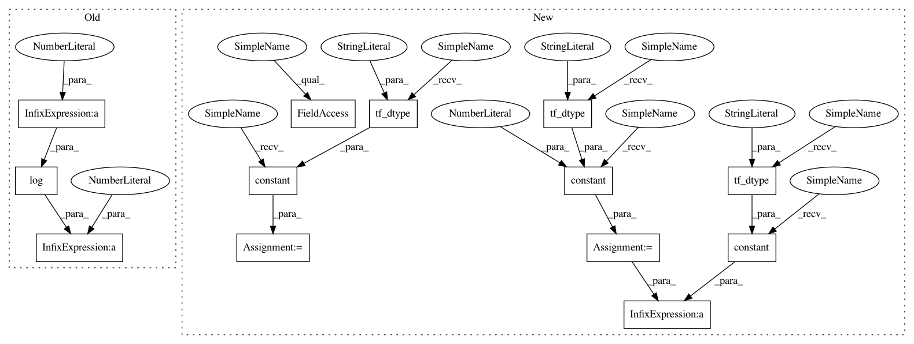

a3fe8bdf1c484e390dfe3947cc395372c0187589,tensorforce/core/distributions/beta.py,Beta,tf_parametrize,#Beta#Any#,50
Before Change
beta = self.beta.apply(x=x)
beta = tf.clip_by_value(t=beta, clip_value_min=log_eps, clip_value_max=-log_eps)
beta = tf.log(x=(tf.exp(x=beta) + 1.0)) + 1.0
shape = (-1,) + self.action_spec["shape"]
alpha = tf.reshape(tensor=alpha, shape=shape)
beta = tf.reshape(tensor=beta, shape=shape)
After Change
def tf_parametrize(self, x):
// Softplus to ensure alpha and beta >= 1
one = tf.constant(value=1.0, dtype=util.tf_dtype(dtype="float"))
epsilon = tf.constant(value=util.epsilon, dtype=util.tf_dtype(dtype="float"))
log_epsilon = tf.constant(value=log(util.epsilon), dtype=util.tf_dtype(dtype="float"))
shape = (-1,) + self.action_spec["shape"]
// Alpha
alpha = self.alpha.apply(x=x)
// epsilon < 1.0, hence negative
alpha = tf.clip_by_value(t=alpha, clip_value_min=log_epsilon, clip_value_max=-log_epsilon)
alpha = tf.math.softplus(features=alpha) + one
alpha = tf.reshape(tensor=alpha, shape=shape)
// Beta
beta = self.beta.apply(x=x)
// epsilon < 1.0, hence negative
beta = tf.clip_by_value(t=beta, clip_value_min=log_epsilon, clip_value_max=-log_epsilon)
beta = tf.math.softplus(features=beta) + one
beta = tf.reshape(tensor=beta, shape=shape)
// Alpha + Beta
alpha_beta = tf.maximum(x=(alpha + beta), y=epsilon)
In pattern: SUPERPATTERN
Frequency: 3
Non-data size: 13
Instances
Project Name: reinforceio/tensorforce
Commit Name: a3fe8bdf1c484e390dfe3947cc395372c0187589
Time: 2019-02-06
Author: alexkuhnle@t-online.de
File Name: tensorforce/core/distributions/beta.py
Class Name: Beta
Method Name: tf_parametrize
Project Name: reinforceio/tensorforce
Commit Name: a3fe8bdf1c484e390dfe3947cc395372c0187589
Time: 2019-02-06
Author: alexkuhnle@t-online.de
File Name: tensorforce/core/distributions/gaussian.py
Class Name: Gaussian
Method Name: tf_log_probability
Project Name: reinforceio/tensorforce
Commit Name: a3fe8bdf1c484e390dfe3947cc395372c0187589
Time: 2019-02-06
Author: alexkuhnle@t-online.de
File Name: tensorforce/core/distributions/beta.py
Class Name: Beta
Method Name: tf_parametrize
Project Name: reinforceio/tensorforce
Commit Name: a3fe8bdf1c484e390dfe3947cc395372c0187589
Time: 2019-02-06
Author: alexkuhnle@t-online.de
File Name: tensorforce/core/distributions/gaussian.py
Class Name: Gaussian
Method Name: tf_entropy